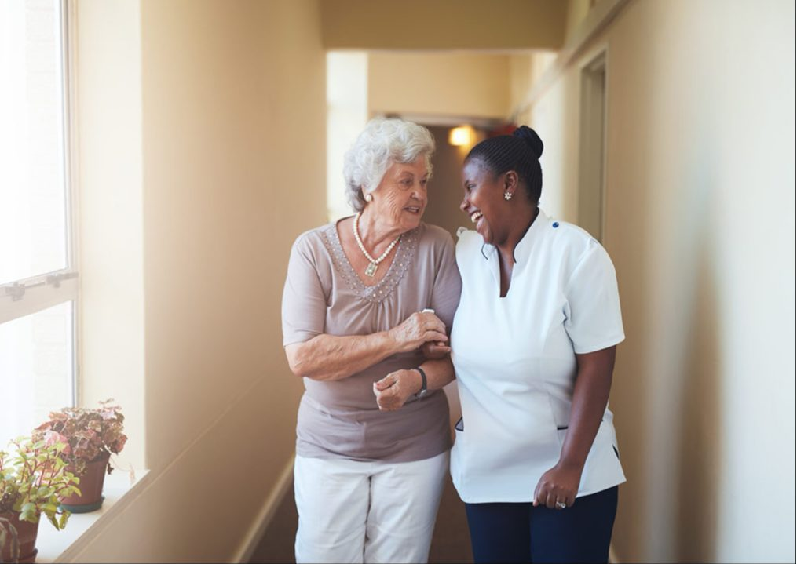
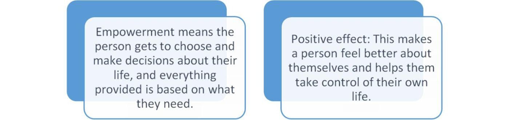
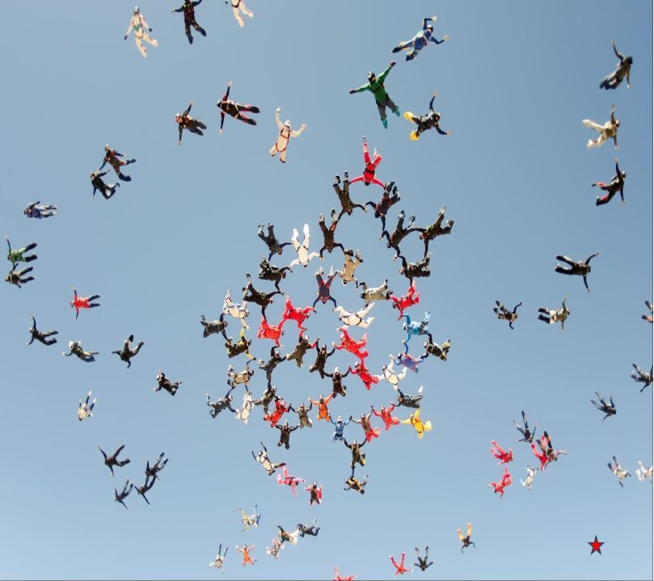
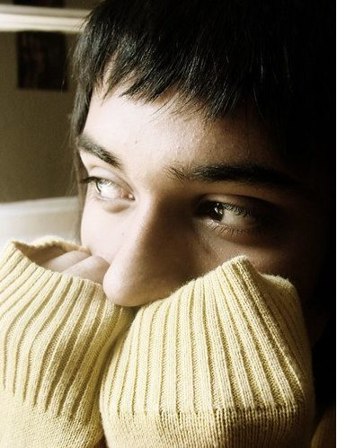

CHCAGE013 Work effectively in aged care · Lesson 2
The person at the centre
Person-centred care, rights, choice and respect, and the attitudes that get in the way.
Lesson 1 showed you the big picture of aged care. This lesson is about one person at a time. You will learn how to put the person at the centre of their care, how to respect their rights and choices, and which attitudes can hurt older people. Rusty thinks he knows best. Daisy asks first.
1 Four principles of aged care
A principle is a basic rule that guides what we do. Four principles guide all aged care and community care.
- NP6 S1 P1Quality services: a provider must meet the standards to be approved (accredited). This means good management, enough staff, and always trying to do better (continuous improvement).
- NP6 S1 P2Client-focused care: the person is involved in every decision about their personal care and health care.
- NP6 S1 P3Rights and control: the person keeps their personal, civic (community) and consumer rights, and stays in control of their own life.
- NP6 S1 P4A safe place: the person feels safe, and their physical and mental wellbeing is supported.

2 The person-centred approach **
A person-centred approach treats each person as an individual. You work with the person when decisions are made about their care.
- NP6 S2 P1What it means: each person is seen as an individual, not as a condition or a room number. You find out what is important to the person and their family, and you work with them to make decisions about their care.
- NP6 S2 P2Their needs come first: think about the person, not only their illness.
- NP6 S2 P3Their story matters: think about their life experience, age, gender, culture, language, beliefs and identity.
- NP6 S2 P4Flexible support: change the support to fit the person's wishes and their right to decide for themselves.
- NP6 S2 P5Start with strengths: look first at what the person can do, then help only where they need it. This is called a strengths-based approach. Family and friends are partners in the care.
- NP6 S2 P6Positive effect: the person feels they have some control over their life and can make their own choices. People feel safer and happier with their care.
Watch: Person-Centered approach
3 Empowerment and social role valorisation **
Two more big words. They sound hard, but the ideas are simple.
- NP6 S3 P1Empowerment means the person has choice and control over the decisions in their life. What you provide is based on their needs.
- NP6 S3 P2Positive effect of empowerment: it builds self-esteem (feeling good about yourself) and self-determination (deciding for yourself).
- NP6 S3 P3Social role valorisation (SRV) means improving the lives of people who are disadvantaged in some way, by helping them have valued roles in the community. "Valorise" means to give value.
- NP6 S3 P4Positive effect of SRV: the person sees the value of what they can give to society.
- NP6 S3 P5Example: Mrs Rossi was a baker. Every Friday she bakes scones for morning tea at the aged care home. She has a valued role, and she feels useful and proud.

For each concept choose the meaning and the positive effect. Then press Check.
4 Care or support? **
These two words sound almost the same. In aged care they mean different things.
- NP6 S4 P1Care means you do things for the person that they cannot do themselves. Their basic needs are met and they are comfortable.
- NP6 S4 P2Support means you help the person to be as independent as they can be. You give prompts (small reminders) and guidance, and the person does the task.
- NP6 S4 P3Support lets the person keep and use the skills they still have. If you do everything for a person, they can lose those skills.
- NP6 S4 P4Example: Care is you buttoning Mr Tran's shirt because his hands cannot do it. Support is you giving Mr Tran time and saying "top button next" while he does it himself.
Tap a story, then tap Care or Support.
5 Your rights in aged care **
A rights-based approach means every person keeps their rights, at any age. You give the person the information they need, so they can make an informed choice.
- NP6 S5 P1Old: still used in your assessment The Charter of Aged Care Rights has 14 rights. Under the Charter, a person in aged care has the right to:
- NP6 S5 P2safe and high-quality care and services
- NP6 S5 P3be treated with dignity and respect
- NP6 S5 P4have their identity, culture and diversity valued and supported
- NP6 S5 P5live without abuse and neglect
- NP6 S5 P6be informed about their care and services in a way they understand
- NP6 S5 P7access all information about themselves, including their rights, care and services
- NP6 S5 P8have control and make choices about their care and their personal and social life, even when the choice has some risk
- NP6 S5 P9have control over the personal parts of daily life, their money and their belongings
- NP6 S5 P10their independence
- NP6 S5 P11be listened to and understood
- NP6 S5 P12have a person of their choice (for example an aged care advocate) support them or speak for them
- NP6 S5 P13complain without being punished, and have the complaint dealt with fairly and quickly
- NP6 S5 P14privacy, and protection of their personal information
- NP6 S5 P15use their rights without it changing the way they are treated
Read the rights in full: Charter of Aged Care Rights booklet and A new aged care act for the rights of older people (fact sheet).
Since 1 November 2025, the Statement of Rights in the Aged Care Act 2024 has replaced the Charter. It says older people have the right to: make their own decisions and get help to make them; a fair assessment and the care they need; safe, quality care free from abuse and neglect; privacy and their own records; information they understand, in their language; complain without fear; an advocate or a person of their choice; and stay connected with family, friends, community, pets and Country. Your assessment still asks for the Charter rights, so learn those too.
6 Responsibilities of the older person **
Rights come with responsibilities. A responsibility is something you are expected to do. The Charter lists four for the person receiving care.
- NP6 S6 P1Treat others with respect, including other residents and staff.
- NP6 S6 P2Respect the right of staff to work in a safe place.
- NP6 S6 P3Help the provider by giving them the information they need, for example about health changes.
- NP6 S6 P4Pay the fees that were agreed, on time.
Is it a right of the older person or a responsibility of the older person?
7 Dignity of risk and quality of life **
Older people have the right to make their own choices, even when there is some risk. And only the person can say what a good life means to them.
- NP6 S7 P1Dignity of risk means letting a person make their own choice about an activity that has good results but may also have some risk.
- NP6 S7 P2Example: Joan (79) wants to walk to the corner shop on her own. There is a small risk she could fall, but walking keeps her strong and happy. With good information, the choice is hers.
- NP6 S7 P3A value judgement is an opinion based on your own beliefs, not on facts. It does not think about what the other person believes or values.
- NP6 S7 P4Quality of life means something different to every person. For one person it is good health. For another it is family, money, faith or doing a hobby.
- NP6 S7 P5So do not judge someone else's quality of life by your own ideas. Give them the information they need and let them make their own choices.

Watch: Dangers of value judgements
Choose the best answer.
8 Ageism, paternalism and stigma **
Some attitudes take away an older person's choice and confidence. Learn the three names and be able to give an example of each.
- NP6 S8 P1Ageism: treating people badly because of negative beliefs about being old. It limits their choices and hurts their self-esteem. Example: an older person does not get a job because the boss thinks older people cannot learn new things.
- NP6 S8 P2Paternalism: people in charge take away freedoms from people who depend on them, saying it is "for their own good". Example: staff stop a resident going on a bus trip because she might get tired.
- NP6 S8 P3Stigma: seeing a person in a negative way because of one thing about them, like their age. They are seen as a label ("old"), not as a person. Example: people treat an older man with no respect because they think he is a burden on society.
Watch: Hidden Attitudes on Ageing
Match each example to the attitude.
9 Myths and the truth **
A myth (or misconception) is a wrong idea that many people believe. Myths about ageing lead to ageism, paternalism and stigma.
- NP6 S9 P1Myth: Older people cannot learn new things. Truth: many older people learn new skills, for example after they retire.
- NP6 S9 P2Myth: Older people are stuck in their ways. Truth: many older people are open to change and make healthy new choices every day.
- NP6 S9 P3Myth: Older people are a burden on society. Truth: older people give a lot: money, time as volunteers, and life experience.
- NP6 S9 P4Myth: All old people are sick. Truth: most older people are healthy and active.
- NP6 S9 P5Myth: Older people should avoid exercise so they do not get hurt. Truth: exercise is good for the body and the mind, and it helps people stay independent.
- NP6 S9 P6Myth: All older people will get dementia. Truth: dementia is not a normal part of ageing. Most older people keep their thinking skills.
Myth or truth?
10 Psychosocial disability **
Psychosocial disability is common in older people. In Australia, more than 1 in 5 people aged 85 and over live with it.
- NP6 S10 P1A mental health condition is an illness of the mind, for example depression, anxiety or bipolar disorder.
- NP6 S10 P2A psychosocial disability is the disability some people experience because of a mental health condition. They have impairments and cannot take part in everyday life as fully as they want to.
- NP6 S10 P3Not everyone with a mental health condition has a psychosocial disability.
- NP6 S10 P4Psychosocial disability is episodic: it comes and goes. During an episode, the person may need different or extra support.
- NP6 S10 P5It comes from a mental health condition meeting barriers in the social world (for example stigma, noise, crowds, rules). The person feels they cannot get past those barriers.
- NP6 S10 P6How it interacts with other disabilities: it can make other disabilities harder to manage, it can change the support a person needs, it can make barriers bigger (for example getting to services), and together the effects add up and lower quality of life.
Watch: Psychosocial disability
11 Amelia and Rachel **
Amelia is 66. She lives with her sister Rachel, who is 60. Amelia has bipolar disorder. Some days she manages well. Most days she struggles with everyday tasks and cannot go out. Her doctor thinks she needs more support for her psychosocial disability.
- NP6 S11 P1Impacts on Amelia: her working memory may be affected, so it is hard to organise and do everyday tasks.
- NP6 S11 P2Impacts on Amelia: it can be hard to go shopping, see friends and keep appointments.
- NP6 S11 P3Impacts on Rachel: she must support Amelia and carry the responsibility for the household.
- NP6 S11 P4Impacts on Rachel: this can mean stress, tiredness and less time for her own life, work and friends.

Sort each impact: is it on Amelia or on Rachel?
Fine. Maybe asking first is not a waste of time. Maybe.
Rusty the Rush Clock
Every person is different. Ask, listen, and let them choose. Well done!
Daisy the Dignity Daisy
Next lesson: the laws and standards that protect older people, and your duties at work.